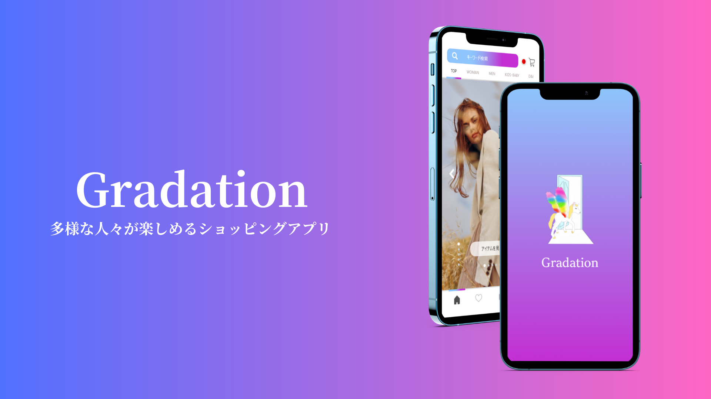

Gradation
| 目的 | 今回のキーワードである「D&I」。 「D&I」とは、ダイバーシティ(多様性)とインクルージョン(包括性)を組み合わせた造語。 人種や性別、年齢、障がい、価値観などの人の内面、外観の違いを互いに認め尊重し合うことです。 多様な性、多様な人種、多様な年齢、多様な個性、多様な価値観などを多種多様な生き方があります。 海外ファッションでは「ダイバーシティ＆インクルージョン」を取り入れたファッションが徐々に浸透されているが、 アプリ面ではアクセシビリティ対応や不便な点もあります。 そのため、Gradationを通して誰もが自由に楽しめるファッションを広めたいです。 |
| 制作範囲 | デザイン |
| 使用ツール | XD/Figma |
| 詳細はこちら |